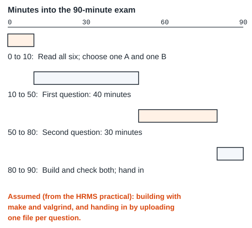

The re-practical
The COS 110 Re-Practical Exam on 6 November 2026 has two scenarios. Section A is the menu of a restaurant, Segfault and Sizzle: a Menu keeps Item pointers in an array and throws exceptions. Section B is about binary strings: a Binary keeps one bool per bit, and a BinaryStrings list keeps them in template nodes.
From the exam paper
You have one and a half hours. The paper has two sections of three questions each. Do at least one question from each section. You may change questions, but you get no extra time.
| Section A: the menu | Section B: binary strings |
|---|---|
| A_1 Exceptions | B_1 Recursion |
| A_2 Operator overloading | B_2 Linked lists |
| A_3 Assignment operator | B_3 Template specialisation |
From the exam paper
The exam is open book, but only the course notes on ClickUp may be used. No calculators or other devices are allowed, apart from the Informatorium computers.
The paper shows the class diagrams in part. The complete UML, and the header files with virtual and const, are given in the exam itself.
How the marks work
Each question is out of 100. In each section only your highest mark counts: its score as a fraction of 100 is multiplied by 16.5. The two sections are added, so the maximum is 33. For example, 80 for A_3 and 50 for B_2 give 0.8 × 16.5 + 0.5 × 16.5 = 21.45.
Assumed
The paper does not describe the build or the marking. The practice questions follow the COS 110 practical exam of 31 October 2026 (the HRMS practical): a makefile builds with -Wall -Werror, valgrind checks memory, you upload one answer file, and code that does not build, or a program that stops abnormally, scores 0.
A plan for the 90 minutes

Give the first question 40 minutes and the second 30, with 10 minutes to choose at the start and 10 to check at the end. Choose the question whose function you can describe in words after two minutes with its header. If you cannot say what a function must do, do not choose that question, even if the function is short.
A short route (about 90 minutes)
If you have about 90 minutes, take this route. If you have more time, take the full route below.
- 15 minutes. On Theory, read The rules that decide your mark. Your first question is its Try this, under “The mark out of 33”. Then read A routine for any exam function and Notepad++ and PowerShell.
- 35 minutes per topic. Choose one topic from Section A and one from Section B. For each, read only its Theory section. Then write the first question in the table below before you open its solution on Examples, and do the topic’s tasks on Practice.
- 5 minutes. Do the Quiz checks for your two topics, then the Fill-in drills for them.
| Topic | Read on Theory | First question (Examples) | Then |
|---|---|---|---|
| A_1 | A_1 Exceptions | A1-05 | A_1 tasks |
| A_2 | A_2 Operator overloading | A2-01 | A_2 tasks |
| A_3 | A_3 Assignment operator | A3-01 | A_3 tasks |
| B_1 | B_1 Recursion | B1-02 | B_1 tasks |
| B_2 | B_2 Linked lists | B2-01 | B_2 tasks |
| B_3 | B_3 Template specialisation | B3-01 | B_3 tasks |
The full route
- Work through Theory in order: the rules, the two class diagrams, the gaps they leave, the build routine, building in PowerShell, then the topics you plan to choose.
- Try each question on Examples yourself before you read its solution.
- Do the tasks on Practice, and time yourself on one downloaded question per topic.
- Check each topic on the Quiz.
No setup on your own computer? The practice questions are also on GitHub, at github.com/SwiftTuition/cos110-prac-exam-practice/tree/main/reprac. The main page of the repository has a Codespaces link that opens it in an online editor with a terminal, so you can run make without installing anything.
In the exam, the complete UML, the header files and the question text decide. A rule marked Assumed is not on the paper, and practice questions can assume different rules from one question to the next.